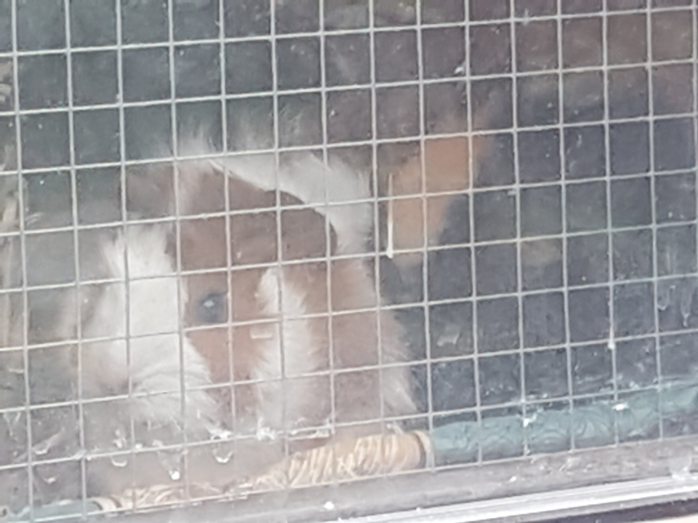

Well it's been 1 heck of a journey finding a poppy in the UK
Guinea pigs not a puppy
We first considered getting a puppy at the tail end of 2018 but I wasn't sure whether I'd be going back to work at that point or not so I opted for what seemed a slightly easier option of getting 2 guinea pigs - cookie and fluffy 
Ok we can have a puppy
When lockdown occurred, like millions of other people, we thought getting a puppy would be a great idea.
So first we read up on lots of different breeds and decided that a Cocker Spaniel might be the best bet as they're not too homebound and not too active, so quite a happy compromise.
Searching Searching Searching!
Chloe was then left to source us a puppy. She first tried Pets4homes which wasn't a happy experience. A lot of messages went unanswered at first. When she got a message finally, she was so keen to get the puppy that she set up a video call and then immediately paid a deposit.
Big mistake, prior to us visiting the puppy, the owners claimed they were unable to do the visit as 1 of the owner's friends had crashed their van. I was suspicious at that point and more suspicious when the site that we arrived at resembled a Gypsy camp.
Still what stopped us proceeding was that Chloe spotted that on 1 of the health check certificates, it said that the puppy's mum had a genetic disease whereas the advert had specifically said both parents had tested clear. After a lot of investigation, I finally managed to get the deposit back.
Our next prospect was an owner on the outskirts of London who seemed very friendly and genuine. He was selling a Bichon Frisse rather than a Cocker spaniel as we'd decided to extend our search for other breeds due to lack of available puppies. When we got to his house it was obviously very rundown and the paperwork indicated that 1 parent had been imported from Dubai and the other had no paperwork. He seemed genuine when he said he'd supply the paperwork but, sadly, it was not to be. He told us that his sister had seperately been selling the puppy and had found a buyer.
Finally struck lucky
With 2 pretty distressing searches gone, we decided not to involve Charlie in any further searches and to go with KC registered breeders only. Things started off slowly and the owners we contacted either didn't have puppies or where a long way away or wanted too much money.
Eventually, however, we found one. I remained cautious after the video call and did plenty of background research. This time we got lucky. There were no problems with the visit and we should, fingers crossed be getting the puppy tomorrow. Hallelujah!
Comments !